Feliz Aniversário💌
Seu navegador não suporta áudio em MP3.
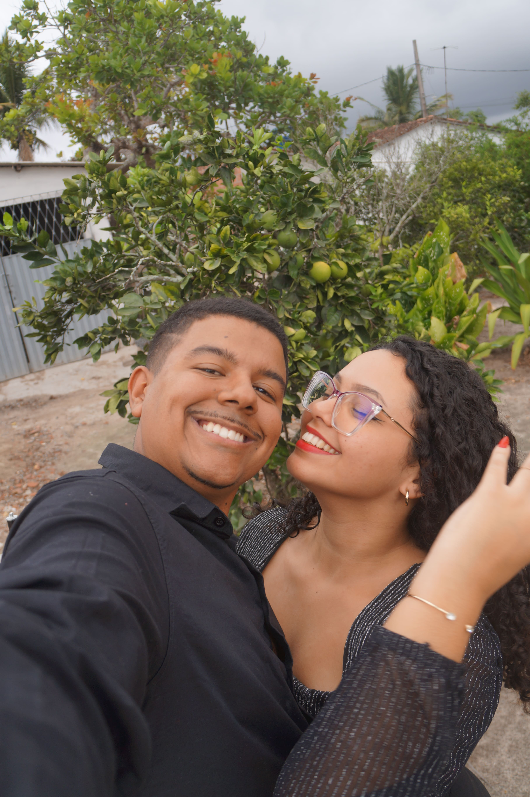
Clique para ler ✨
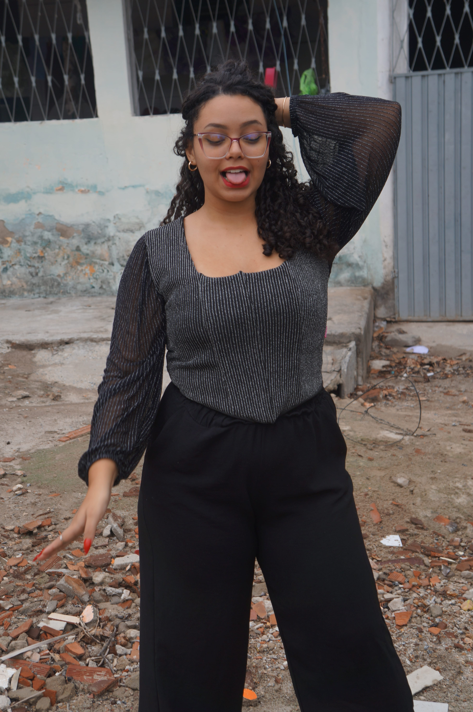
Sorrisos compartilhados😁
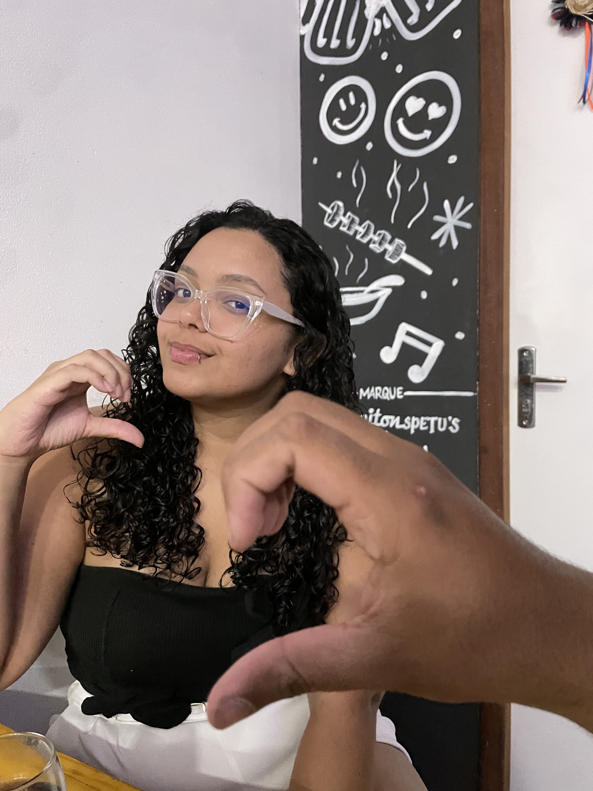
Momento especial 💞
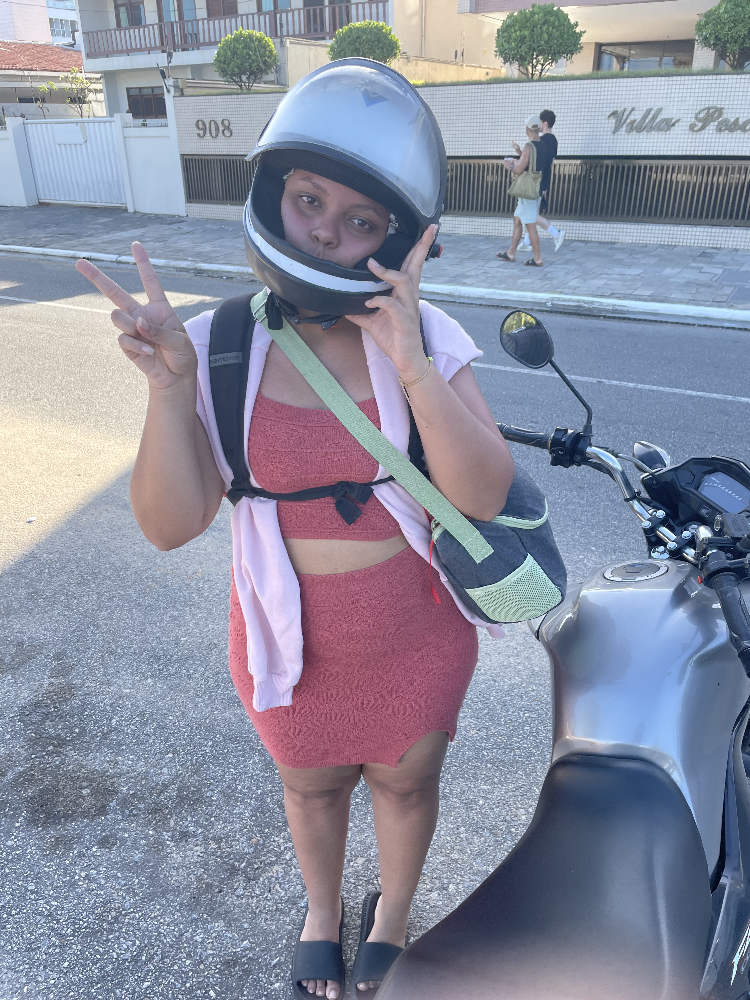
Mais um momento 💖
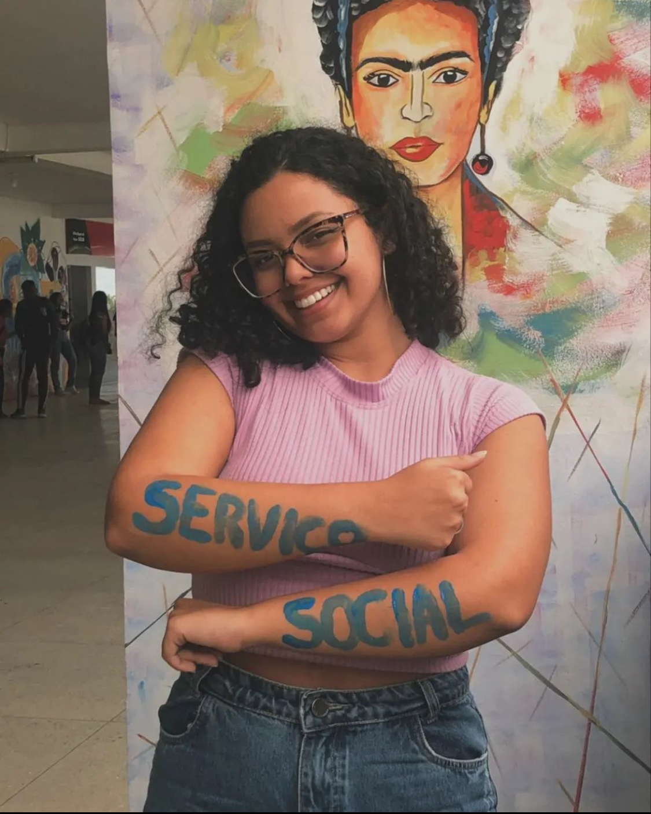
Mude o Mundo 🌎
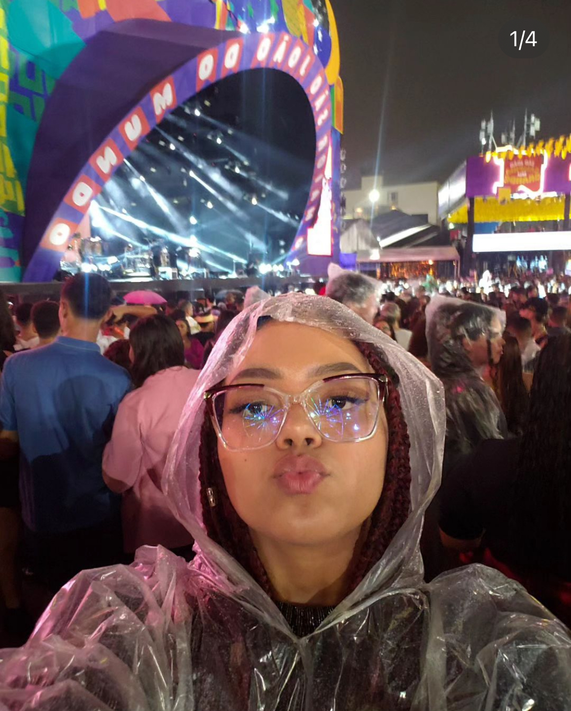
Essa vibe! 🎉🎉
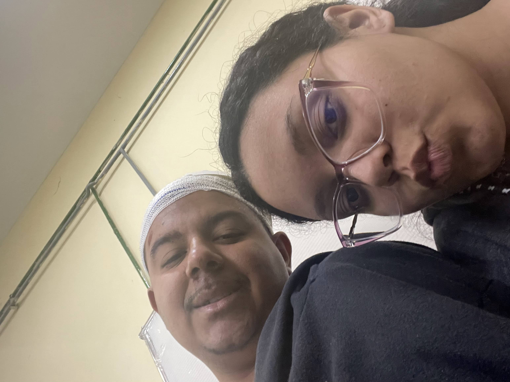
Você comigo sempre 💕
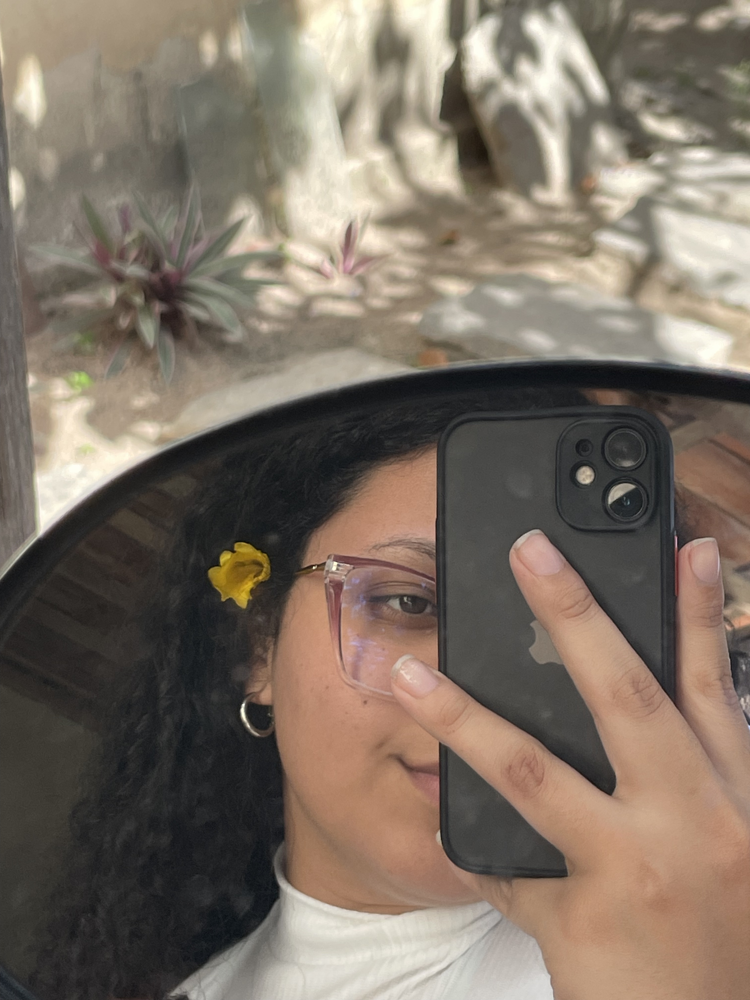
Arrebatadora
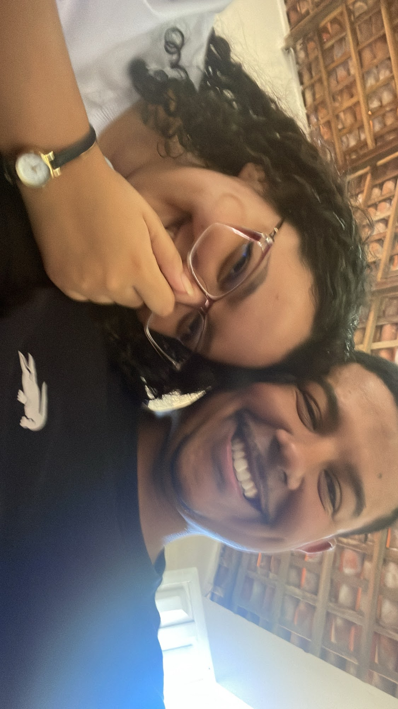
Uaifai😂
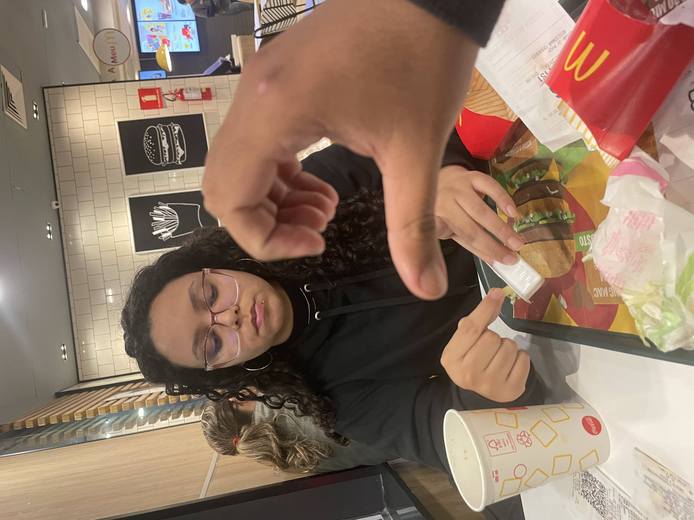
Bó no Mac? 🍔
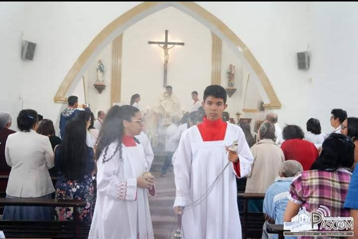
O nosso servir!🕯️
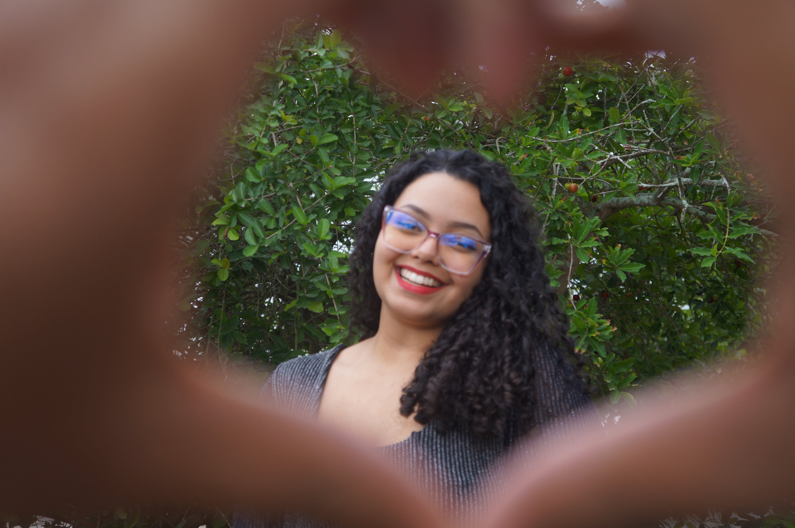
Te amo ao infinito e Além!💖